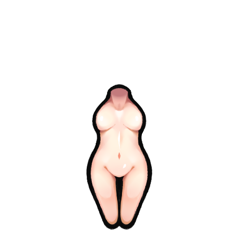

这是 鼠族HSK 整合之前 的原始工坊 mod Seioch.Kurin.HAR（战狐 / Kurin，Steam 创意工坊
2326430787，作者 Seioch）添加的全部内容盘点：一个可玩的兽耳狐人异族及其配套的服饰、武器、建筑、发型、基因、派系、
兵种、科研、手术、文化、剧本等。数据取自 mod 自带的 1.5 版 Defs/ + 根 Textures/Languages/Biotech/Hair，
中文为 mod 自带简体中文汉化。整合后的改动（HSK 台并、科技三段错位、CE 适配等）不在此表内。

战狐 Kurin：狐耳+长尾的类人异族，有独立躯体、头型、脸、耳、尾的换装渲染；自带派系（战斗狐 / 共和国）、 一整套从内衣到外甲的服饰、战术枪械与仪式冷兵器、专属工作台与炮塔、发型与 Biotech 基因/异种人。
全库 307 条 def · 有独立贴图 102 条 · 下方按类别分页浏览。
| 类别 | 条目 | 说明 | 明细页 |
|---|---|---|---|
| 服饰 · 内衣 | 9 | 贴身内衣层 | 1 |
| 服饰 · 贴身 | 30 | OnSkin 皮肤层服饰 | 1 / 2 / 3 |
| 服饰 · 中层 | 1 | 中层衣物 | 1 |
| 服饰 · 外壳 | 5 | Shell 外套 | 1 |
| 服饰 · 外搭 | 13 | Overhead 外搭/甲 | 1 |
| 服饰 · 童装 | 3 | 儿童服饰 | 1 |
| 服饰 · 机械族(Biotech) | 3 | 需 Biotech：机械族穿戴件 | 1 |
| 武器 | 20 | 枪械/近战/弓矢(含配套弹药) | 1 |
| 武器 · 机械族(Biotech) | 3 | 需 Biotech：机械族武器 | 1 |
| 建筑 · 生产 | 3 | 生产工作台 | 1 |
| 建筑 · 炮塔 | 4 | 防御炮塔(火铳车) | 1 |
| 建筑 · 陷阱 | 2 | 陷阱(套索) | 1 |
| 其它 · 铃兰 | 1 | 铃兰植物(装饰/药草) | 1 |
| 发型 | 17 | Kurin 专属发型 | 1 |
| 基因与异种人(Biotech) | 8 | 需 Biotech：基因与异种人 | 1 |
| 种族与外观本体 | 4 | 种族本体 def + 躯体/头/耳/尾 | 外观零件 |
| 派系 | 7 | 派系与据点地图 | 兵种/派系 |
| NPC 兵种 | 27 | 战斗狐/共和国/殖民者等 NPC 类型 | 兵种/派系 |
| NPC 兵种(Biotech) | 1 | 机械师兵种 | 兵种/派系 |
| 科研 | 11 | Kurin 专属研究节点 | 科研/义体 |
| 手术 · 义体 | 15 | 身体部件 / 义体 / 移植手术 | 科研/义体 |
| 文化 · 命名 · 背景 | 103 | 文化 / 命名规则 / 背景故事 | 文化/背景 |
| 想法 | 1 | 社会想法(ThoughtDef) | 文化/背景 |
| 剧本 | 2 | 开局剧本 | 兵种/派系 |
| 剧本(Biotech) | 1 | 机械师剧本 | 兵种/派系 |
| 事件 · 加入 | 1 | 初始漫游者加入池 | 兵种/派系 |
| 服饰 · 穿戴层 | 5 | 自定义穿戴层定义 | 科研/义体 |
| 服饰 · 分类节点 | 6 | 自定义物品分类节点 | 科研/义体 |
| 种族设置 | 1 | AlienRace 全局设置 | 科研/义体 |
科技档：原始中世纪工业太空极致无科技档 ThingDef=def 类型 文件名=来源 Defs 文件。